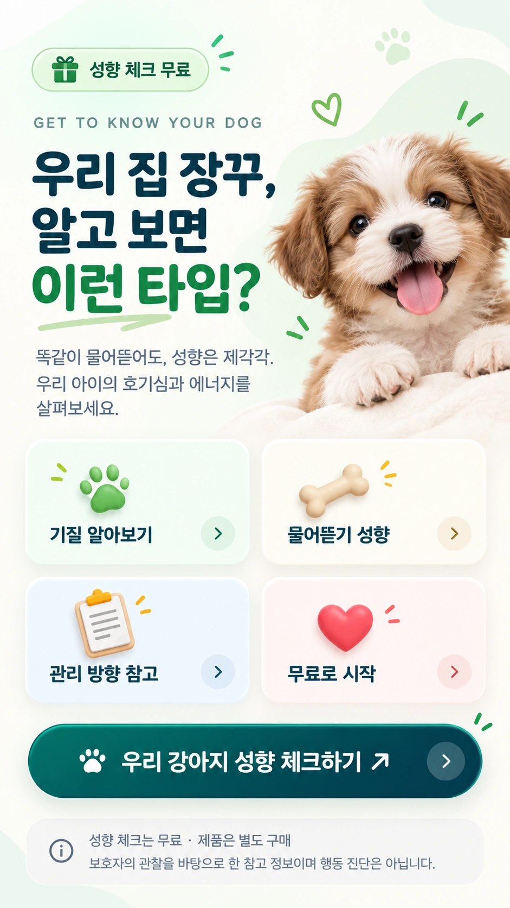

최근 행동 관찰
산책, 놀이, 낯선 환경에서 보인 최근의 평소 반응을 떠올려요.
FREE DOG PERSONALITY CHECK
같은 행동처럼 보여도 아이마다 마음과 기질은 달라요. 평소 곁에서 지켜본 모습을 떠올리며 호기심과 에너지, 관계 방식은 물론 물어뜯기 성향까지 함께 살펴보세요.
약 3분 · 제품 구매 없이 무료 · 행동 진단이 아닌 참고 정보

HOW IT WORKS
산책, 놀이, 낯선 환경에서 보인 최근의 평소 반응을 떠올려요.
바라는 모습보다 실제로 자주 보이는 행동에 가까운 답을 골라요.
네 가지 관찰 축을 조합한 16가지 유형과 생활 팁을 확인해요.
FOUR OBSERVATION AXES
낯선 장소와 물건에 먼저 다가가는지, 충분히 살핀 뒤 움직이는지 관찰해요.
움직임과 놀이를 오래 즐기는지, 안정적인 휴식을 더 선호하는지 살펴봐요.
보호자와 함께하는 활동을 좋아하는지, 스스로 탐색하는 시간을 즐기는지 봐요.
흥분 뒤 빠르게 안정되는지, 한 행동에 오래 몰입하는지 확인해요.
16 PERSONALITY TYPES
유형은 강아지를 단정하는 이름이 아니라, 지금의 성향을 이해하기 위한 출발점이에요.
새로운 장소와 냄새를 먼저 확인해요.
사람과 친구를 만나면 에너지가 올라가요.
좋아하는 놀이에 깊이 빠져들어요.
변화를 빠르게 읽고 다음 행동을 찾아요.
충분히 살핀 뒤 안전하게 다가가요.
가까운 사람 곁에서 편안함을 느껴요.
익숙한 놀이를 자기 속도로 이어가요.
상황을 지켜보며 알맞은 때를 기다려요.
스스로 새로운 길을 찾는 걸 즐겨요.
원할 때 다가와 깊은 애정을 표현해요.
혼자서도 좋아하는 활동을 잘 이어가요.
주변에 휩쓸리지 않고 방법을 찾아요.
보호자와 같이 새로운 경험을 즐겨요.
밝은 반응으로 주변에 활기를 더해요.
보호자의 반응을 힘으로 과제에 집중해요.
익숙한 사람들과 안정적인 일상을 좋아해요.
PERSONALITY & CHEWING
무언가를 입으로 살펴보는 건 강아지에게 자연스러운 일이에요. 호기심이 많은 아이는 새로운 것을 알아보려고, 에너지가 넘치는 아이는 심심한 마음을 풀려고 물어뜯을 수 있어요. 물어뜯기 성향 체크를 통해 자주 무는 장소와 상황을 함께 살펴보면, 아이에게 잘 맞는 돌봄 방법을 찾는 데 도움이 됩니다.
FAQ
네. 제품을 구매하지 않아도 무료로 이용할 수 있습니다.
아니요. 보호자의 관찰을 바탕으로 일상 성향을 살펴보는 참고 정보입니다. 건강이나 행동 문제가 걱정된다면 수의사 또는 행동 전문가와 상담해 주세요.
가능하지만 성장 과정과 환경에 따라 행동이 달라질 수 있어요. 최근의 평소 모습을 기준으로 답하고, 시간이 지난 뒤 다시 확인해 보세요.
질문에 떠올린 상황이나 최근 환경 변화에 따라 조금 달라질 수 있습니다. 한 번의 결과로 단정하기보다 반복 관찰의 출발점으로 활용해 주세요.